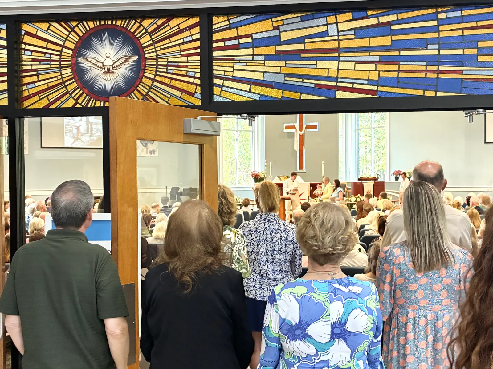

Who We Are
About Christ Church
Rooted in Tradition,
Growing in Grace
To plant a reproducing church in Bluffton and beyond. A faith community shaped by Scripture, Prayer, and Sacramental Life, joining a Gospel movement that fosters personal conversion and authentic community where every person is known and valued. That our faithful Christian presence makes Bluffton a better and more hopeful place to live.
We are rooted in the historic Christian faith, grounded in the authority of Scripture, shaped by the ancient creeds, nourished by the sacraments, and guided by the wisdom of the historic Church.
We are honored to welcome and serve families throughout Bluffton, Okatie, Hardeeville, Hilton Head Island, and the wider Beaufort County community.
For where two or three are gathered in my name, there am I among them. — Matthew 18:20

What Drives Us
Gospel-Centered
Everything we do is rooted in the truth of Scripture and the good news of Jesus Christ. The Gospel shapes our worship, our community, and our mission to the world.
Ancient Worship
We worship using the Book of Common Prayer, drawing from centuries of Christian liturgy. Our services connect us to the ancient faith while speaking to the present day.
Community Focused
We believe in common grace, common prayer, and common life for the common good. Our church exists not just for ourselves, but to serve and bless the Bluffton community.
Our Beliefs
We stand within a rich spiritual heritage that stretches back through the centuries to the early Church. Our faith is built upon four essential pillars that have guided Christians throughout the ages.
Scripture
The Holy Scriptures of the Old and New Testaments are the Word of God written, containing all things necessary for salvation, and serving as the ultimate rule and standard of faith.
Creeds
The Apostles' Creed and the Nicene Creed serve as sufficient statements of the Christian faith, summarizing the essential doctrines believed by Christians throughout history.
Sacraments
The two sacraments ordained by Christ himself — Baptism and the Supper of the Lord — are administered with unfailing use of His words of institution and the elements ordained by Him.
Historic Episcopate
The historic episcopate, locally adapted, reflects the continuity of apostolic leadership that has been a hallmark of the Church since its earliest days.
Rev. Jonathan Riddle
Lead Pastor & Church PlanterThe Rev. Jonathan H. Riddle is a priest and church planter serving in Bluffton, South Carolina. Jonathan and his wife, Lisa, have been married for 29 years and are grateful parents to six incredible children. He is a graduate of Appalachian State University and holds a Master of Divinity from Reformed Theological Seminary.
After more than a decade of ministry leadership at The Church of the Cross, Jonathan is now planting Christ Church Bluffton with a vision to cultivate a faithful, Gospel-centered presence in the Lowcountry. He is passionate about forming communities shaped by Scripture, shared meals, and lives arranged for the glory of God and the good of others.
When he’s not serving the church, Jonathan can happily talk for hours about C.S. Lewis, J.R.R. Tolkien, and the Carolina Panthers.
“We are planting Christ Church Bluffton because we believe God is calling us to bring the beauty of historic worship and the power of the Gospel to this growing community. Come and see what God is doing.”
Rev. Dr. Bradley Chestnut
Pastor of Worship & Ministry DevelopmentThe Rev. Dr. Bradley Chestnut serves Christ Church as Pastor of Worship and Ministry Development. Together with his wife, Caitlin, and their children, Liam and Raelyn, he is grateful to call Bluffton home and to raise his family within the faithful community of Christ Church.
For nearly two decades, Bradley has served the Church through worship leadership, pastoral ministry, and the formation of Christian leaders. Holding both a Ph.D. in Psychology and a Doctor of Ministry, he seeks to unite thoughtful theological reflection with faithful pastoral practice. His ministry has also been shaped by service as a clinical psychologist, hospital chaplain, and member of hospital ethics and review boards in North Carolina, where he cultivated pastoral wisdom in addressing questions of suffering, conscience, and human dignity.
Bradley’s desire is to partner with ministry leaders to help the vision of Christ Church find faithful expression through strategic leadership, thoughtful planning, and Christ-centered worship. His desire is to equip leaders, strengthen the ministries of the church, and foster a culture in which the Gospel shapes every aspect of congregational life.
When he’s not in a meeting or leading worship, you’ll likely find Bradley with a book in one hand and a cup of coffee in the other—or happily serving as a jungle gym for Liam and Raelyn.
We’d Love to Hear from You
Whether you have questions about our community, would like to submit a prayer request, or are simply looking for a church to call home — we’d love to connect with you.